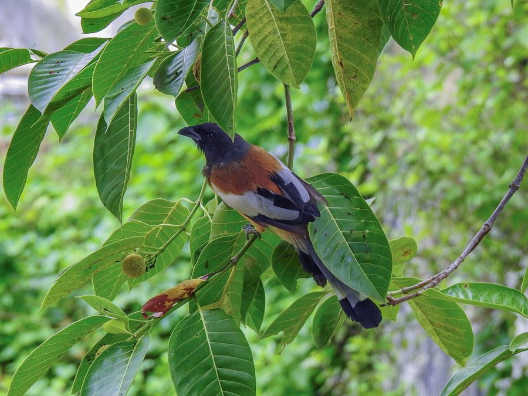

महालतRufous Treepie
Dendrocitta vagabunda · Corvidae · BRD-0090

- Scientific name
- Dendrocitta vagabunda (Latham, 1790)
- Family
- Corvidae
- Hindi
- महालत / टका चोर
- Local names
- mahalat, mahal, taka chor, kotri, mahtab
- Status here
- native
- Movement
- Resident, here all year
- IUCN
- LC
- Review
- audited and independently read
When to look कब देखें
Present all year.
Tell it apart from इनसे अलग पहचानें
महालत / Rufous Treepie
Dendrocitta vagabunda (Latham, 1790) — Corvidae
महालत — एक बड़ी, शोर मचाने वाली चिड़िया जो पेड़ों में कूदती-फिरती है और तरह-तरह की आवाज़ें निकालती है। इसका शरीर भूरा है और पूँछ बहुत लंबी है। समूह में रहती है और बहुत स्मार्ट होती है, कई तरह के भोजन खाती है।
Quick Identification त्वरित पहचान
| Feature | Description |
|---|---|
| Size | Large corvid (36–40 cm total length); long tail is prominent |
| Plumage | Rufous-brown body; head darker than body |
| Head | Dark brown, almost blackish |
| Back and underparts | Rufous-buff to cinnamon-brown |
| Tail | Very long (20+ cm), darker than body, with white tip visible |
| Wings | Darker, with blue-grey shoulder patch and bend of wing |
| Legs and feet | Yellow-orange |
| Bill | Black, stout (typical corvid) |
Field tip: A large, noisy, rufous-brown bird with a very long tail, acrobatic movements in trees, and a yellow-orange face. Often seen in small groups; instantly recognizable by size and tail length.
Morphology आकारिकी
Biometrics (nominate subspecies vagabunda, northern India — the form in eastern UP):
| Measurement | Range |
|---|---|
| Total length | 360–400 mm (including long tail) |
| Wing (flattened chord) | 165–190 mm |
| Tail | 190–230 mm (very long) |
| Tarsus | 38–42 mm |
| Bill (culmen from base) | 28–32 mm |
| Weight | 280–320 g |
Plumage: Head and nape dark brown to blackish-brown. Back and wing coverts rufous-buff to cinnamon-brown. Rump and underparts paler, almost buff. Primaries darker (grey-brown); secondary coverts bright blue-grey — striking in flight. Tail very long, dark brown with white terminal spots, more visible in flight.
Facial markings: Bare yellow or orange skin around the eye and on the face.
Legs and feet: Yellow-orange.
Sexes: Similar; male may be slightly larger.
Juveniles: Duller rufous; facial bare parts less vivid; tail not as long as in adults.
Vocalisations
Rufous Treepie is an extremely vocal bird with a remarkably varied and loud repertoire.
- Typical call: A loud, harsh "chaar-chaar-chaar" or "yeet-yeet-yeet" scolding call, often strident.
- Melodic notes: Interspersed with whistling and more melodic bursts.
- Alarm call: Varied loud screeches and harsh chuckles when predators are sighted.
- Group calls: When groups assemble or communicate, cacophonous chorus of overlapping calls.
Behaviour & Ecology व्यवहार और पारिस्थितिकी
Arboreal acrobat: Rufous Treepie spends almost all its time in trees, moving with remarkable agility — jumping, swinging, hanging from branches in positions that seem precarious. It rarely comes to the ground.
Social and vocal: Highly social, living in small family groups (4–8 birds). Groups move together through trees, stay in contact with constant vocalizations, and roost together.
Opportunistic omnivore: Eats fruits, insects, small lizards, nestlings of other birds, and scraps. This dietary flexibility is key to its success.
Nesting: Builds a stick nest in a tree fork or on a branch, often quite exposed. Entire group participates in nest defence.
Life Cycle / Phenology जीवन चक्र
- January–February: Pair bonds form; groups together
- March–May: Nest building and egg-laying; territory defence
- April–June: Chick-rearing; entire group assists
- June–August: Fledglings depend on group for care and food
- September–December: Winter flocks formed; less nesting activity but groups stay together year-round
Host Plants or Prey आहार
Highly omnivorous diet:
- Fruits: figs, berries, mango scraps, guava
- Insects: grasshoppers, beetles, caterpillars, wasps, termites
- Small reptiles: lizards and skinks
- Bird eggs and nestlings (predatory)
- Human food scraps and garbage
Predators / Natural Enemies शत्रु
- Shikra (Accipiter badius) — hunts flying birds and juveniles
- Asian Eagle-Owl (Buffy Fish Owl species) — hunts roosting birds at night
- Indian Python (Python molurus) — raids nests in trees
- Feral cats — rare, as treepies are tree-dependent
Agricultural / Human Relevance कृषि प्रासंगिकता
Mixed impacts: Treepies consume some invertebrate pests and help with seed dispersal of wild fruits. However, they also raid nests of smaller birds and are predatory on birds' eggs and chicks. In orchards, they may sample ripening fruit but usually do not cause economic damage.
Behaviour in settlements: Highly habituated to human presence; often found in village gardens and park-like spaces. Groups are entertaining but noisy and conspicuous.
Cultural presence: Known for their noisiness and social behaviour; sometimes kept in semi-captivity in villages (though legally protected). The name "महालत" (maharaj, big-shot) refers to their bold, assertive behaviour.
Protected status: Schedule IV of Wildlife (Protection) Act, 1972. Nest disturbance is illegal.
Expected Locally स्थानीय रूप से अपेक्षित
Not a field record. Written from published accounts for eastern Uttar Pradesh. No confirmed local sighting yet — if you have seen it, that is what the atlas needs.
अभी तक स्थानीय पुष्टि नहीं। यह विवरण प्रकाशित स्रोतों से है, किसी अवलोकन से नहीं।
Rufous Treepie is expected in forest fringes, village gardens with large trees, and scrub woodlands throughout Basti and Ayodhya districts. Most visible in early morning and late afternoon when groups are actively moving and calling. Listen for the loud, harsh "chaar-chaar-chaar" or "yeet-yeet-yeet" calls and scan tree canopy for the distinctive long-tailed silhouette.
Distribution वितरण
Global range: Indian subcontinent and Southeast Asia — widespread from the plains of India to about 1,500 m in the Himalayas, extending through Nepal, Bangladesh to Myanmar and Southeast Asia.
In India: Common resident throughout India except the far Northeast; abundant in forests and villages.
In Uttar Pradesh: Widely distributed in suitable habitat; more common in areas with forest or dense tree cover.
In Basti district / eastern UP: Expected in forest margins, village gardens and orchards with large trees.
Research Questions शोध प्रश्न
- How many Rufous Treepies are in your village? / आपके गाँव में कितने महालत हैं? — Listen and count birds in small family groups; note tree-types they use.
- What do groups do in each season? / अलग-अलग मौसम में क्या करते हैं? — No equipment needed — track group movement and activities month by month.
- Do they eat the fruits in orchards? / क्या बाग के फल खाते हैं? — Watch orchards during fruiting; count feeding visits and damage.
- How do groups communicate? / समूह में कैसे बात करते हैं? — Record calls and note different types; observe when each call is used.
- Do groups stay together year-round? / साल भर एक साथ रहते हैं? — Track specific groups to see if composition changes between seasons.
Similar Species मिलती-जुलती प्रजातियाँ
| Species | How to tell apart | हिंदी |
|---|---|---|
| Black-throated Sparrow / House Crow (Corvus splendens) | Larger all-black and grey bird; no rufous; different habitat (urban) | कौआ — सब काला, शहर का |
| Asian Jay (Garrulus glandarius) | Pinkish-brown with black crest; blue wing patch; less vocal; forested areas | जय — कलगी वाली, जंगल में |
Field rule: Large, rufous-brown, very long-tailed corvid with blue-grey wing patch, yellow face + extremely loud "chaar-chaar-chaar" calls + acrobatic tree-behaviour = Rufous Treepie. No other large eastern UP bird has the combination of rufous colour and extremely long tail.
Taxonomy & Classification वर्गीकरण
Original description. Dendrocitta vagabunda was described by Latham in 1790 as Corvus vagabundus, based on specimens from India. The genus Dendrocitta contains five species of treepies across Asia.
Subspecies. Several subspecies recognised; vagabunda is the nominate form occurring across northern and central India.
Family and order placement. Order Passeriformes; family Corvidae (corvids: crows, jays, magpies, ravens). Treepies are corvids specialized for canopy foraging.
Phylogenetic notes. Molecular studies confirm Dendrocitta as nested within Corvidae, derived from Asian jay ancestors.
IUCN status rationale. Assessed as Least Concern. The species is widespread, common and has adapted well to village environments.
Photo Gallery फोटो गैलरी
Note: Add field photos tomedia/species/rufous_treepie/
फोटो निर्देश: पास से (भूरी पीठ और लंबी पूँछ दिखाते हुए), पेड़ पर अक्रोबेटिक पोज़ में, समूह में साथ, और उड़ते समय।
Photos needed आवश्यक फोटो
- [ ] Close-up showing rufous body and long tail (भूरा रंग + लंबी पूँछ)
- [ ] Hanging or acrobatic pose on branch (पेड़ पर अक्रोबेटिक मूव)
- [ ] Group together (समूह)
- [ ] In flight showing blue wing patch (उड़ते समय नीला पंख)
- [ ] In tree canopy (पेड़ के ऊपर)
References संदर्भ
- Latham, J. (1790). Index Ornithologicus. London, p. 375. [original description]
- Ali, S. & Ripley, S.D. (1987). Handbook of the Birds of India and Pakistan. Vol. 5. Oxford University Press, New Delhi.
- Grimmett, R., Inskipp, C. & Inskipp, T. (2011). Birds of the Indian Subcontinent. 2nd ed. Christopher Helm, London.
- Rasmussen, P.C. & Anderton, J.C. (2005). Birds of South Asia: The Ripley Guide. Smithsonian Institution, Washington.
- Madge, S. & Burn, H. (1994). Crows and Jay: A guide to the crows, jays and magpies of the world. Pica Press, Sussex.
- BirdLife International (2024). Dendrocitta vagabunda. IUCN Red List of Threatened Species. Ver. 2024.
- GBIF Occurrence Data — Dendrocitta vagabunda, Uttar Pradesh (2010–2025).
Source file: species/fauna/birds/rufous_treepie.md